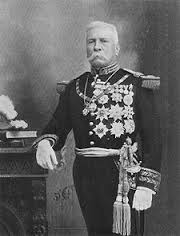
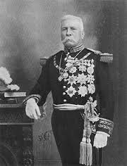

18 de Noviembre, 1910
El “Plan de San Luís”, proclamado por Francisco I. Madero, había señalado el 20 de noviembre de 1910 para levantarse en armas, pero dos días antes, Miguel Cabrera, jefe de policía de Puebla, acompañado de un pelotón de gendarmes intenta entrar a la casa de Aquiles Serdán, ubicada en Santa Clara 4, para catearla en busca de armas y propaganda. Ya en el mes de septiembre pasado, las autoridades habían cateado su casa y ante los rumores del levantamiento del día veinte, el jefe de la policía local llega con orden de cateo más minucioso; pero él, sus hermanos Carmen y Máximo, resistieron la orden.
Los hermanos Serdán y otras dieciocho personas más habían acumulado armas y parque para participar en la lucha revolucionaria y deciden enfrentar a los gendarmes a tiros. Filomena del Valle, esposa de Aquiles y Carmen Serdán, su hermana, salen al balcón de la casa con las armas en las manos y gritan a la gente que se ha reunido atraída por la balacera: “¡Poblanos! Los que están allí van a morir por el pueblo, vengan a ayudarles; aquí hay armas. ¡Viva la República!”.

 
